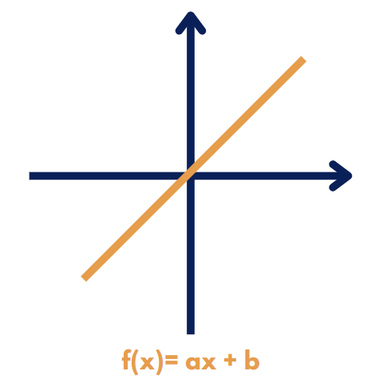

Podras ver que es y para que sirve una funcion lienal, sus resultados y su gráfico

¿QUE ES UNA FUNCIÓN LINEAL?
Es un tipo de función matemática que se representa mediante una ecuación de la forma: f(x) = ax + b, donde:
- "f(x)" es el valor de la función en un punto dado "x".
- "a" es la pendiente de la recta.
- "b" es la ordenada al origen, es decir, la función cuando x = 0.
ANÁLISIS DE PARAMETROS
El análisis de los parámetros en una función lineal implica comprender el significado de "a" y "b".
- Pendiente (a): La pendiente (a) de una función lineal determina la orientación de la recta. Una pendiente positiva indica un aumento en f(x) a medida que x aumenta, mientras que una pendiente negativa indica una disminución en f(x) a medida que x aumenta.
- Ordenada al origen (b): La ordenada al origen (b) es el valor de la función cuando x = 0. Representa el punto en el que la gráfica de la función corta el eje vertical (eje y).
¿CÓMO SE GRAFICA?
- Determina la pendiente (a) y la ordenada al origen (b) de la función.
- Utiliza estos valores para construir puntos en el plano cartesiano. Puedes elegir varios valores de x y calcular los valores correspondientes de f(x) utilizando la ecuaciónf(x) = ax + b.
- Une los puntos con una línea recta. Dado que es una función lineal, la gráfica será una línea recta.